Empirical analyses of Subscription Video-on-Demand (SVOD) catalogues frequently suffer from unexamined schema contamination, improper treatment of non-random missingness, violations of observation independence when analyzing multi-label attributes, and conflation of original production years with platform addition timestamps. This paper presents a methodological and empirical investigation of the Netflix global catalogue snapshot (N = 8,807 raw records; N = 8,803 deduplicated unique titles spanning release years 1925–2021 and additions through September 2021). We make four principal contributions: (1) Forensic Auditing & Rejection of MCAR: We recover 100% of missing duration records from cross-column schema shifts and demonstrate that director missingness (29.91% overall; 91.40% in TV Shows vs. 3.07% in Movies) strongly rejects Missing Completely at Random (MCAR; χ2 = 6,926.74, p < 10−300, Cramér's V = 0.8871), a pattern consistent with format-conditioned Missing at Random (MAR) though MNAR cannot be excluded from observed data alone; (2) Title-Grain Independence & Regional Format Divergence: Using First Normal Form (1NF) tokenization across 7,972 geo-tagged titles (122 distinct country labels) paired with strictly independent one-row-per-title sensitivity tests (primary country V = 0.3339; single-country only V = 0.3730), we establish that credits attributed to India skew heavily toward Movies (92.0%), whereas credits attributed to South Korea (73.6–79.0% TV) and Japan (62.6–68.2% TV) skew toward episodic series; (3) Catalogue Addition Lag Dynamics: Defining catalogue addition lag as Li = Yi,added − Yi,released, we show that TV Shows exhibit a significantly shorter observed interval between recorded release year and Netflix addition year (median = 0.0 years; 51.98% same-year) than Movies (median = 2.0 years; 29.12% added ≥ 6 years post-release; Mann-Whitney U = 1.035 × 107, p = 2.62 × 10−98); and (4) Rating Harmonization & Sensitivity Analysis: Reconciling US theatrical (MPAA) and television rating scales across three alternative mappings confirms that episodic television consistently allocates a higher share of catalogue titles to children's programming than feature films (29.50% vs. 20.71% under baseline 4-tier harmonization, V = 0.1056; 17.47% vs. 7.31% under strict young-children criteria, V = 0.1535).
The rapid global expansion of Subscription Video-on-Demand (SVOD) platforms over the past decade has fundamentally reorganized the industrial economics of screen media production, distribution, and windowing. Following its January 2016 expansion into 130 additional territories—bringing its operational footprint to 190 countries—Netflix evolved from a primarily domestic aggregator of syndicated studio libraries into a transnational commissioner and licensor of localized film and television assets (Lobato, 2019; Lotz, 2022). Characterizing the structural laws governing such large-scale digital catalogues is an important empirical task across data science, media economics, and information systems research.
Despite the widespread use of public streaming datasets such as the Netflix Movies and TV Shows benchmark corpus (shivamb/netflix-shows; Bansal, 2021), existing descriptive studies and exploratory notebooks routinely suffer from four methodological flaws:
df.dropna()) or unconditional mode imputation on incomplete categorical fields (director, country, cast) without testing whether missingness is statistically independent of content format.country and listed_in store comma-delimited multi-label strings. Evaluating unexploded string literals undercounts international co-productions (16.55% of geo-tagged titles) and obscures secondary genre classifications.release_year) with its platform ingestion date (date_added), failing to isolate the licensing or catalogue addition lag separating initial production from SVOD availability.To establish a rigorous empirical baseline, this study structures its investigation around seven formal research questions (RQ01–RQ07), mapping each question to parametric, non-parametric, and contingency-based statistical procedures (Table 1).
| ID | Research Question | Analytical & Statistical Method | Primary Variables |
|---|---|---|---|
| RQ01 | What is the format composition of Netflix's global catalogue? | Univariate frequency & binomial proportion analysis | type |
| RQ02 | Which countries contribute the most titles, and does format allocation vary significantly across production hubs? | 1NF list explosion, dual-denominator aggregation, 10×2 Pearson χ2 test & Cramér's V | country_clean, type |
| RQ03 | What are the most prevalent genres overall and within each content format? | Multi-label tokenization & format-stratified conditional share estimation | listed_in, type |
| RQ04 | How has content addition velocity evolved over time compared to original production years, and how does catalogue addition lag differ by format? | Annual/monthly time-series decomposition, seasonality matrix, Mann-Whitney U test on lag Li | date_added, release_year, acquisition_lag |
| RQ05 | How do movie runtimes and television season counts vary, and what structural outliers exist? | Parametric (μ, σ) & non-parametric (Q2, IQR, Tukey 1.5×IQR fences) distributional analysis | duration_min, seasons |
| RQ06 | How do maturity ratings differ between Movies and TV Shows before and after cross-regulatory scale harmonization? | Column-normalized contingency tables, regulatory harmonization, 2×4 Pearson χ2 test | rating_clean, maturity_tier, type |
| RQ07 | Which country-by-genre combinations dominate major regional production hubs? | Relational inner join on exploded 1NF views & row-normalized specialization matrix | country_name, genre_name |
The empirical corpus evaluated in this investigation is the Netflix Movies and TV Shows dataset (netflix_titles.csv; Bansal, 2021), released under the Creative Commons Public Domain Dedication (CC0-1.0). The raw CSV file contains Nraw = 8,807 observational records across 12 attributes, occupying 7.79 MB of deep in-memory heap storage (8,171,772 bytes when evaluating underlying Python string objects on the heap via memory_usage(deep=True), compared to 0.81 MB of shallow 8-byte array pointers). Table 2 reports the schema profile, attribute cardinalities, and missing-value rates stratified by content format.
| Attribute | Storage Type | Unique | Null Count | Overall Null % | Movie Null % (n=6,131) | TV Show Null % (n=2,676) | Diagnostic Finding & Preprocessing Disposition |
|---|---|---|---|---|---|---|---|
show_id |
String (object) |
8,807 | 0 | 0.00% | 0.00% | 0.00% | Surrogate key (s1–s8807); unique per row |
type |
Categorical | 2 | 0 | 0.00% | 0.00% | 0.00% | Binary format indicator (Movie, TV Show) |
title |
String (object) |
8,807 | 0 | 0.00% | 0.00% | 0.00% | Contains 4 case/Unicode whitespace near-duplicate pairs |
director |
String (object) |
4,528 | 2,634 | 29.91% | 3.07% | 91.41% | Rejects MCAR (consistent with MAR | type); assign 'Unknown / Not Applicable' |
country |
Multi-label String | 748 | 831 | 9.44% | 7.18% | 14.61% | Assign 'Unknown / Unspecified'; report dual denominators |
cast |
Multi-label String | 7,692 | 825 | 9.37% | 7.75% | 13.08% | Omitted in documentaries/reality works; retain explicitly |
date_added |
Date String | 1,767 | 10 | 0.11% | 0.00% | 0.37% | 88 leading-space strings; 10 TV Shows lack ingestion date |
release_year |
Integer (int64) |
74 | 0 | 0.00% | 0.00% | 0.00% | Complete temporal coverage (1925–2021) |
rating |
Categorical | 17 | 4 | 0.05% | 0.03% | 0.07% | Contains 3 shifted duration strings + NR/UR synonyms |
duration |
Alphanumeric | 220 | 3 | 0.03% | 0.05% | 0.00% | 0 true nulls after recovering 3 shifted records from rating |
listed_in |
Multi-label String | 514 | 0 | 0.00% | 0.00% | 0.00% | Explodes into 19,315 tags across 42 atomic genres |
description |
Free Text | 8,775 | 0 | 0.00% | 0.00% | 0.00% | 59 records share synopses across regional language dubs |
Under Rubin's (1976) missingness framework, observations are Missing Completely at Random (MCAR) if and only if the missingness indicator M ∈ {0, 1} is statistically independent of both observed variables Yobs and unobserved variables Ymis. To test whether director missingness (Mdir) satisfies MCAR, we construct a 2 × 2 contingency table crossing Mdir against content format (type ∈ {Movie, TV Show}) on the deduplicated corpus (N = 8,803). Among Movies, only 188 of 6,128 records (3.07%) lack a director credit; among TV Shows, 2,445 of 2,675 records (91.40%) lack a director credit.
Evaluating Pearson's Chi-square statistic of independence and Cramér's V effect size yields:
The magnitude of Cramér's V = 0.8871 establishes that director missingness is strongly associated with content format (P(Mdir | type) ≠ P(Mdir)). This finding decisively rejects the MCAR assumption and is consistent with a MAR mechanism conditional on observed content format, although a Missing Not at Random (MNAR) mechanism cannot be ruled out using observed data alone. In screen media cataloging, feature films credit a principal director at the work level, whereas serialized television series credit showrunners or assign different directors across individual episodes. Consequently, applying listwise deletion (df.dropna()) eliminates 91.40% of all television series, corrupting the sample format distribution from 69.61% Movies to 96.3% Movies. Similarly, country missingness is twice as prevalent in TV Shows (14.61%) as in Movies (7.18%), and cast missingness (9.37% overall) is concentrated in unscripted documentaries, nature docuseries, and stand-up specials. We therefore preserve all incomplete records and encode missing categorical values transparently ('Unknown / Not Applicable' for director; 'Unknown / Unspecified' for country; 'Unknown / Uncredited' for cast).
Forensic domain auditing exposed three data engineering anomalies in netflix_titles.csv that must be corrected prior to statistical modeling:
duration and rating (100% Duration Recovery): Tabulating unique values in rating revealed three anomalous strings matching the regular expression ^\d+\s*min$: "74 min", "84 min", and "66 min". Inspecting these three rows (Table 3) confirms that they are the exact three records in the entire dataset where duration is NaN (three stand-up comedy specials directed by and starring Louis C.K.). Programmatically transferring rating back to duration for rows matching min and setting their rating to 'Unrated / Unknown' achieves 100.0% data completeness in duration across all 8,803 unique titles.
df.duplicated().sum()) and exact title matching both return 0 duplicates, normalizing title strings by replacing Unicode non-breaking spaces (U+00A0, ) with standard ASCII spaces, stripping leading/trailing whitespace, and lowercasing (_title_key = title.str.replace(' ', ' ').str.strip().str.lower()) uncovers 4 duplicate (title, type) pairs (8 rows, Table 3). In each pair, the director, country of origin, original release year, runtime/seasons, and genre classifications are identical, indicating platform re-ingestion under a new show_id. Deduplicating on (_title_key, type) with keep='first' yields our clean analytical cohort of N = 8,803 unique catalogue titles (6,128 Movies and 2,675 TV Shows).
date_added and Negative Lag Records: Exactly 88 non-null strings in date_added contain leading spaces (e.g., " November 1, 2019"), which cause strict strptime parsers to fail unless .str.strip() is applied prior to pd.to_datetime(). Furthermore, 14 records (12 TV Shows, 2 Movies) exhibit release_year > year_added (lags of −1 to −3 years), caused by Netflix updating release_year when a returning season airs while keeping the original Season 1 date_added timestamp.
| Anomaly Class | Show ID(s) | Format | Title (Raw Representation) | Director / Country | Release Yr | Raw Rating → Duration | Resolution Action |
|---|---|---|---|---|---|---|---|
| Panel A: Shifted Field | s5542 |
Movie | Louis C.K. 2017 | Louis C.K. (United States) | 2017 | 74 min → NaN |
Move 74 min to duration |
| Panel A: Shifted Field | s5795 |
Movie | Louis C.K.: Hilarious | Louis C.K. (United States) | 2010 | 84 min → NaN |
Move 84 min to duration |
| Panel A: Shifted Field | s5814 |
Movie | Louis C.K.: Live at the Comedy Store | Louis C.K. (United States) | 2015 | 66 min → NaN |
Move 66 min to duration |
Panel B: Trailing |
s3372 / s6530 |
Movie | Consequences vs. Consequences |
Ozan Açıktan (Turkey) | 2014 | TV-MA · 106 min |
Drop s6530 (identical metadata) |
| Panel B: Title Case Drift | s304 / s6706 |
Movie | Esperando la carroza vs. Esperando La Carroza |
Alejandro Doria (Argentina) | 1985 | TV-MA / NR · 95 min |
Drop s6706 (re-ingestion) |
| Panel B: Title Case Drift | s160 / s7346 |
Movie | Love in a Puff vs. Love In A Puff |
Pang Ho-cheung (Hong Kong) | 2010 | TV-MA · 103 min |
Drop s7346 (re-ingestion) |
| Panel B: Title Case Drift | s1271 / s8023 |
TV Show | Sin senos sí hay paraíso vs. Sin Senos sí Hay Paraíso |
Unknown (US, Colombia) | 2018 | TV-MA · 3 Seasons |
Drop s8023 (re-ingestion) |
A foundational challenge in analyzing SVOD metadata is that geographical attribution (country) and genre classification (listed_in) represent many-to-many relationships encoded as comma-separated strings. Among the 7,972 titles with known country metadata, 1,319 titles (16.55%) are international co-productions involving two or more countries (e.g., "United States, United Kingdom, France"). Similarly, titles carry between 1 and 3 genre labels in listed_in, totaling 19,315 genre assignments across the 8,803 unique titles (mean = 2.194 genres per title).
If an analyst explodes multi-valued columns directly inside the main DataFrame, a US–UK–France co-production with three genre tags expands into 3 × 3 = 9 rows, corrupting univariate title counts, runtime distributions, and maturity rating shares. Conversely, if an analyst inspects only unexploded string literals or retains only the first listed country, international partnerships and secondary genre classifications are systematically undercounted. To preserve relational integrity, we implement a dual-grain normalization architecture:
df_clean, N = 8,803): Maintains a strict one-row-per-title invariant for all univariate and bivariate title-level analyses (format share, release year, addition date, catalogue addition lag, runtime/season distributions, and maturity ratings).df_countries, Nc = 10,014): Tokenizes country_clean on commas, strips whitespace, filters empty and 'Unknown / Unspecified' tokens, and projects atomic pairs (show_id, country_name) across 122 distinct country labels.df_genres, Ng = 19,315): Tokenizes listed_in into atomic pairs (show_id, genre_name) across 42 unique Netflix genre categories.
For each title i with a valid platform addition timestamp (n = 8,793), let Yi,added = year(date_added_cleani) and let Yi,released = release_yeari. We define the Catalogue Addition Lag Li (in calendar years) as:
We treat Li strictly as an observed catalogue addition lag proxy measuring the interval between recorded release_year and year_added. Because netflix_titles.csv does not record contract execution dates, regional availability rollouts, Netflix Original status, or whether a multi-season show's release_year reflects its debut or most recent season, Li = 0 should be interpreted as same-year catalogue ingestion rather than direct proof of first-run original commissioning.
To enable valid cross-format comparisons of content maturity (RQ06), we reconcile the 14 standardized rating codes (after merging 3 occurrences of UR into NR) across the US Motion Picture Association (MPAA) theatrical scale and the US Television Parental Guidelines into four mutually exclusive Audience Maturity Tiers: (1) Kids & Family (TV-Y, TV-Y7, TV-Y7-FV, G, TV-G, PG, TV-PG); (2) Teens 13+ (PG-13, TV-14); (3) Mature Adults 17+ (R, TV-MA, NC-17); and (4) Unrated / Unknown (NR and missing).
Across the deduplicated catalogue of N = 8,803 unique titles, feature films (Movie) account for 6,128 titles (69.61%) and episodic series (TV Show) account for 2,675 titles (30.39%), representing a 2.29 : 1 format ratio in unit-of-title terms (Figure 1).
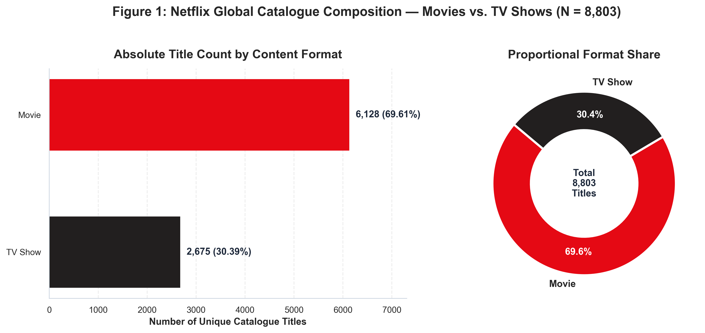
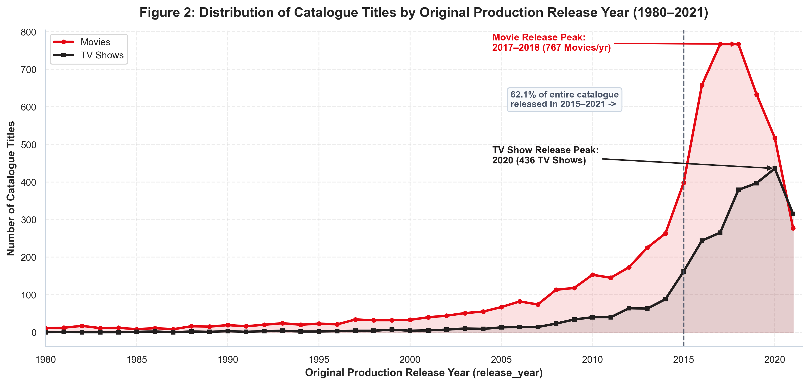
release_year, 1980–2021 subset covering 98.4% of the catalogue). Feature film production vintage peaks in 2017–2018 (767 Movies/year), whereas episodic television production vintage continues climbing to an all-time peak in 2020 (436 TV Shows).
Evaluating original production vintage (release_year, spanning 1925 to 2021; Figure 2) reveals extreme left-skewness (recency concentration). Exactly 84.85% (7,469 titles) of the catalogue was originally released in 2010 or later, and 62.08% (5,465 titles) was released between 2015 and 2021. Non-parametric order statistics confirm that television series in the catalogue are significantly more recent in production vintage (median release_year = 2018, IQR = 2016–2020, 10th percentile = 2012) than feature films (median release_year = 2017, IQR = 2013–2019, 10th percentile = 2006).
Whereas release_year measures when a title was originally produced, date_added measures when Netflix ingested the asset into its streaming library. Table 4 and Figure 8 detail the annual and monthly evolution of platform additions across the 8,793 titles with valid ingestion timestamps (6,128 Movies and 2,665 TV Shows).
| Addition Era / Year | Movies Added | TV Shows Added | Total Titles Added | Annual Growth (%) | Movie Share (%) | TV Show Share (%) |
|---|---|---|---|---|---|---|
| 2008–2014 (Early Streaming Era) | 45 | 11 | 56 | — | 80.36% | 19.64% |
| 2015 (Pre-Global Expansion) | 56 | 26 | 82 | +241.7% (vs. 2014) | 68.29% | 31.71% |
| 2016 (190-Country Rollout) | 253 | 176 | 429 | +423.2% | 58.97% | 41.03% |
| 2017 (International Scaling) | 839 | 349 | 1,188 | +176.9% | 70.62% | 29.38% |
| 2018 (Library & Original Ramp) | 1,237 | 411 | 1,648 | +38.7% | 75.06% | 24.94% |
| 2019 (All-Time Ingestion Peak) | 1,421 | 592 | 2,013 | +22.1% | 70.59% | 29.41% |
| 2020 (COVID-19 / TV Record) | 1,284 | 595 | 1,879 | −6.7% | 68.33% | 31.67% |
| 2021* (Partial Year: Jan 1 – Sept 25) | 993 | 505 | 1,498 | — (8.8 mos) | 66.29% | 33.71% |
| Total Valid Dated Catalogue | 6,128 | 2,665 | 8,793 | 100.0% | 69.69% | 30.31% |
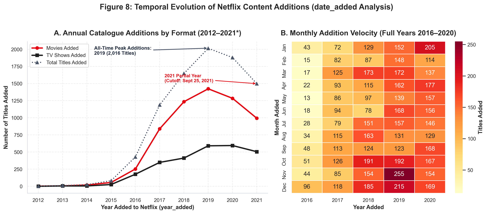
date_added). Panel A tracks annual additions by content format from 2012 through September 25, 2021. Panel B displays a Month × Year ingestion heatmap across the five complete expansion calendar years (2016–2020), illustrating fourth-quarter and mid-summer licensing peaks.
As documented in Table 4 and Figure 8A, annual ingestion velocity expanded nearly 25-fold between 2015 (82 titles) and 2019 (2,013 deduplicated titles). Notably, when total additions moderated in 2020 (1,879 titles), the reduction was confined entirely to feature films (1,421 → 1,284), whereas episodic television additions reached an all-time high of 595 series and expanded their share of annual additions from 24.94% (2018) to 33.71% (2021).
To test whether Movies and TV Shows operate under fundamentally different licensing window regimes, we evaluate the catalogue addition lag Li = Yi,added − Yi,released across the n = 8,779 titles with non-negative lag (6,126 Movies and 2,653 TV Shows; Table 5 and Figure 12).
| Format | Valid n | Mean Lag | SD | Median (Q2) | IQR (Q1–Q3) | 0 Yrs (Same-Yr) | 1–2 Yrs (Recent) | 3–5 Yrs (Mid) | 6–10 Yrs (Library) | 11+ Yrs (Classic) |
|---|---|---|---|---|---|---|---|---|---|---|
| Movie | 6,126 | 5.73 yrs | 9.74 yrs | 2.0 yrs | 7.0 (0–7) | 30.40% | 27.18% | 13.30% | 11.62% | 17.50% |
| TV Show | 2,653 | 2.31 yrs | 5.33 yrs | 0.0 yrs | 2.0 (0–2) | 51.98% | 23.71% | 11.65% | 7.76% | 4.90% |
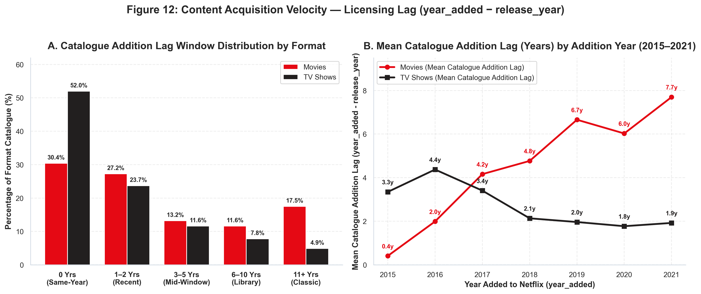
year_added − release_year). Panel A compares the proportional distribution across five licensing age windows between Movies and TV Shows. Panel B tracks mean catalogue addition lag by addition year from 2015 to 2021, capturing the post-2017 divergence as Netflix paired first-run original TV series with older licensed film libraries.
Because catalogue addition lag is heavily right-skewed (spanning 0 to 93 years), we perform a two-sided Mann-Whitney U test comparing the rank distributions of Movies and TV Shows:
The test confirms that TV Shows exhibit a significantly shorter observed interval between recorded release year and Netflix catalogue-addition year than Movies: 51.98% of TV Shows have an observed lag of 0 years (median = 0.0 years; 75.69% within ≤ 2 years), compared to 30.40% of Movies (median = 2.0 years). Conversely, 29.12% of Movies have an observed lag of ≥ 6 years (11.62% in 6–10 years; 17.50% in 11+ years), compared to 12.66% of TV Shows. While part of the low lag in TV Shows reflects contemporary additions, it is also influenced by Netflix's convention of updating release_year on returning multi-season series.
Evaluating our exploded First Normal Form country relation (df_countries, Nc = 10,014 country credits across n = 7,972 geo-tagged titles and 122 distinct country labels) reveals high geographic Pareto concentration. The top 10 most frequently credited countries of origin account for 7,555 credits (75.44% of all country attributions). As noted in Section 3.1, because 16.55% of geo-tagged titles are international co-productions crediting multiple countries, Table 6 reports both the share of geo-tagged titles (n = 7,972) and the share of the total deduplicated catalogue (N = 8,803) alongside within-country format shares.
| Rank | Country | Movie Credits | TV Show Credits | Total Credits | % of Geo-Tagged Titles (n=7,972) | % of Total Catalogue (N=8,803) | Within-Country Movie Share (%) | Within-Country TV Share (%) |
|---|---|---|---|---|---|---|---|---|
| 1 | United States | 2,752 | 937 | 3,689 | 46.27% | 41.91% | 74.60% | 25.40% |
| 2 | India | 962 | 84 | 1,046 | 13.12% | 11.88% | 91.97% | 8.03% |
| 3 | United Kingdom | 534 | 272 | 806 | 10.11% | 9.16% | 66.25% | 33.75% |
| 4 | Canada | 319 | 126 | 445 | 5.58% | 5.06% | 71.69% | 28.31% |
| 5 | France | 303 | 90 | 393 | 4.93% | 4.46% | 77.10% | 22.90% |
| 6 | Japan | 119 | 199 | 318 | 3.99% | 3.61% | 37.42% | 62.58% |
| 7 | Spain | 171 | 61 | 232 | 2.91% | 2.64% | 73.71% | 26.29% |
| 8 | South Korea | 61 | 170 | 231 | 2.90% | 2.62% | 26.41% | 73.59% |
| 9 | Germany | 182 | 44 | 226 | 2.83% | 2.57% | 80.53% | 19.47% |
| 10 | Mexico | 111 | 58 | 169 | 2.12% | 1.92% | 65.68% | 34.32% |
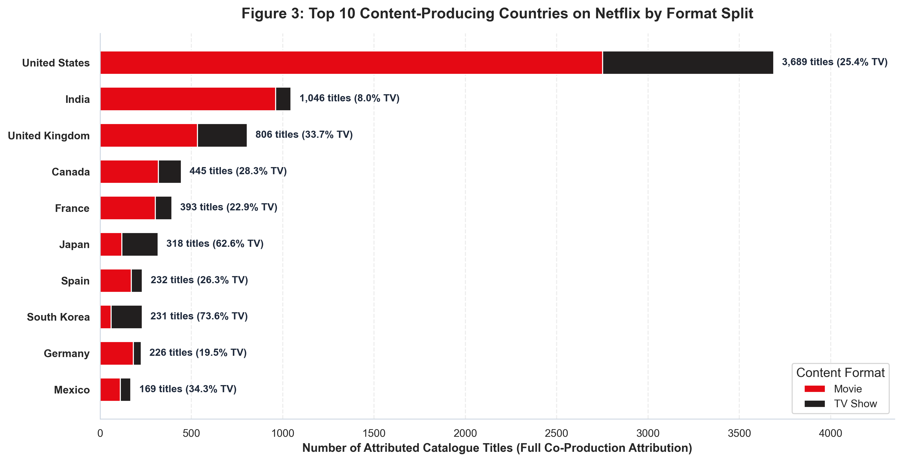
Statistical Independence & Co-Production Sensitivity Analysis: In the exploded country relation (Table 6), a co-produced title (16.55% of geo-tagged titles) contributes one credit to each participating country. Because Pearson's χ2 test requires independent observations, running inference directly on exploded credits (n = 7,555 credits across top 10 countries; χ2 = 687.68, df = 9, p = 3.07 × 10−142, V = 0.3017) inflates the effective sample size. To verify that regional format divergence holds under strict observation independence (one row per unique title), we evaluate two title-grain sensitivity specifications: (a) Primary Country Only (assigning each title exclusively to its first-listed country, n = 6,217 independent titles across the same top 10 countries), which yields χ2 = 693.18, df = 9, p = 2.03 × 10−143, Cramér's V = 0.3339 (India = 91.96% Movies; South Korea = 77.73% TV Shows; Japan = 67.18% TV Shows); and (b) Strictly Single-Country Titles Only (excluding all multi-country co-productions, n = 5,280 independent titles), which yields χ2 = 734.57, df = 9, p = 2.55 × 10−152, Cramér's V = 0.3730 (India = 93.43% Movies; South Korea = 79.00% TV Shows; Japan = 68.18% TV Shows). Removing co-production overlap actually increases the effect size from V = 0.3017 to V = 0.3730:
Across the 19,315 atomic genre tags in df_genres (42 unique categories), the five highest-volume classifications overall are International Movies (2,749 titles; 31.23% of the 8,803 catalogue), Dramas (2,425; 27.55%), Comedies (1,672; 18.99%), International TV Shows (1,350; 15.34%), and Documentaries (869; 9.87%) (Figure 4). Taken together, Netflix's taxonomic genre labels International Movies and International TV Shows appear on 4,099 unique titles (46.56% of the catalogue) (note that this reflects Netflix's internal genre tagging rather than a verified count of non-US origin).
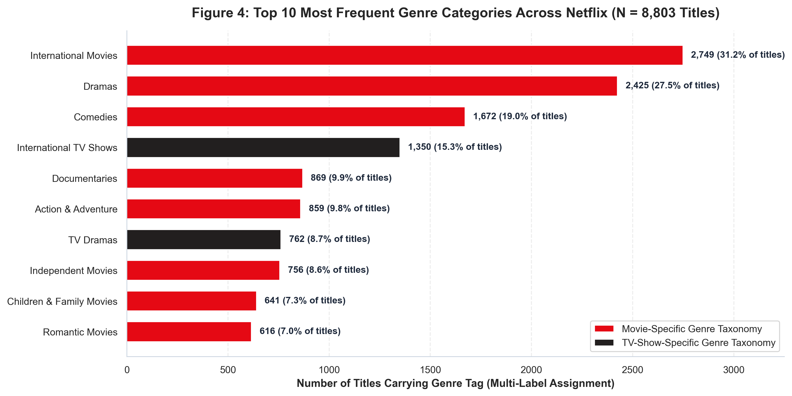
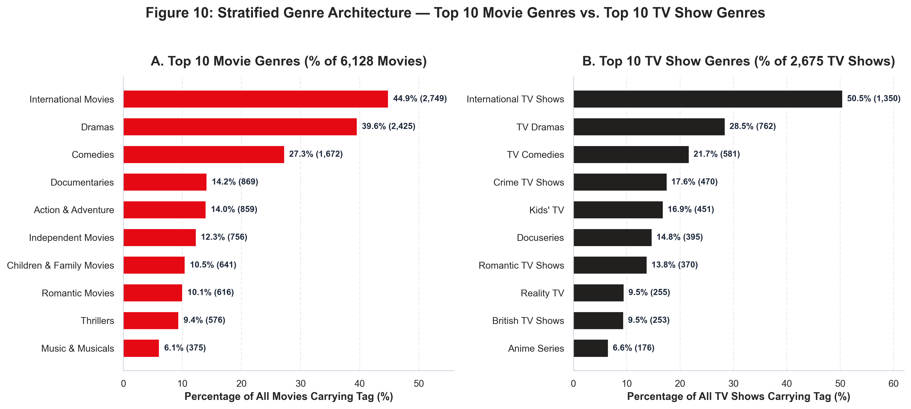
Because Netflix partitions its genre taxonomy by format (e.g., separating feature Dramas from episodic TV Dramas, and feature Documentaries from episodic Docuseries), unstratified rankings understate television genres due to the 2.29 : 1 format imbalance. When stratified within format (Figure 10), both Movies and TV Shows share the same three primary structural pillars—International content (44.9% of Movies vs. 50.5% of TV Shows), Drama (39.6% vs. 28.5%), and Comedy (27.3% vs. 21.7%)—but diverge across specialized secondary niches:
Crime TV Shows (470 series; 17.57% of TV Shows), Kids' TV (451; 16.86%), Docuseries (395; 14.77%), Romantic TV Shows (370; 13.83%), Reality TV (255; 9.53%), British TV Shows (253; 9.46%), and Anime Series (176; 6.58%).Documentaries (869 films; 14.18% of Movies), Action & Adventure (859; 14.02%), Independent Movies (756; 12.34%), Children & Family Movies (641; 10.46%), Romantic Movies (616; 10.05%), and Thrillers (576; 9.40%).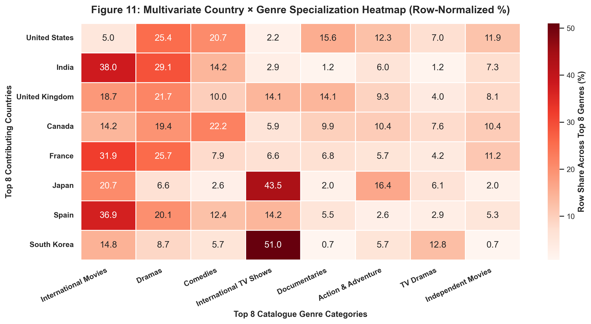
Figure 11 presents the descriptive attribution matrix (RQ07) formed by an inner join between df_countries and df_genres on show_id (producing 22,012 total country-genre attribution pairs across the corpus, and 8,569 attributed country-genre credit pairs across 4,756 unique titles within the Top 8 Countries × Top 8 Genres submatrix). Because titles with multiple countries and multiple genres receive proportional attribution weight across cells, Figure 11 is interpreted strictly as a descriptive attribution profile rather than an independent title-level contingency test. Row normalization demonstrates that the United States and United Kingdom specialize heavily in non-fiction Documentaries (15.6% and 14.1% of their top-8 genre assignments, respectively, vs. 1.2% in India and 0.7% in South Korea) and Independent Movies (11.9% US; 8.1% UK; 11.2% France; 10.4% Canada). Conversely, India concentrates 81.3% of its top-8 genre tags in International Movies (38.0%), Dramas (29.1%), and Comedies (14.2%), while South Korea (51.0% International TV Shows, 12.8% TV Dramas) and Japan (43.5% International TV Shows, 16.4% Action & Adventure) dominate serialized television and action/anime storytelling.
Following recovery of the three misplaced Louis C.K. runtime records in Section 2.3, numeric duration is 100.0% complete across all 6,128 Movies (duration_min) and all 2,675 TV Shows (seasons). Because Netflix groups all non-episodic works—including theatrical feature films, short films, stand-up comedy specials, concert films, and interactive branching specials—under the umbrella label Movie, we pair overall distributional statistics (Figure 5) with a genre-stratified runtime decomposition (Table 7).
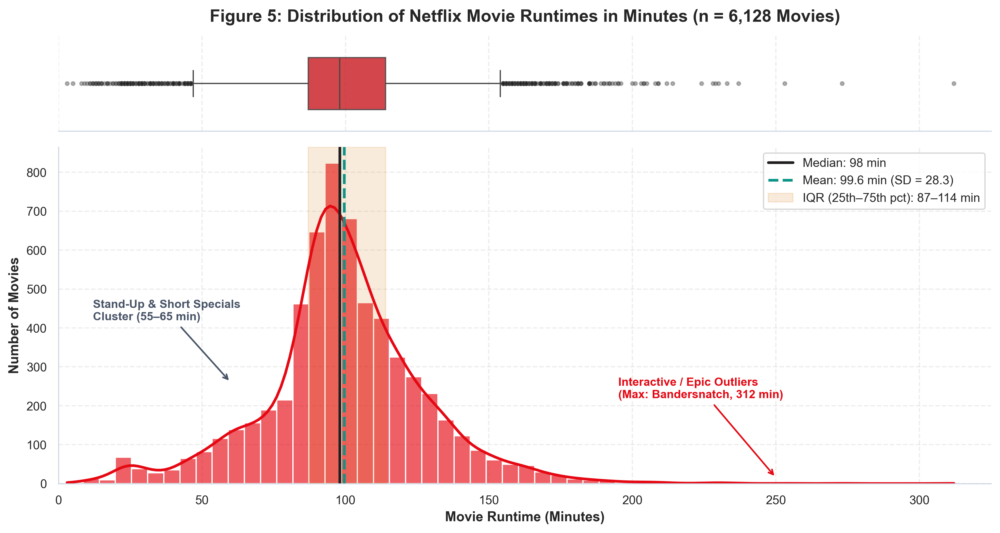
| Movie Genre Category | Movie Count (n) | Mean Runtime (min) | Std Dev (min) | 25th Pct (Q1) | Median (Q2) | 75th Pct (Q3) | IQR (min) |
|---|---|---|---|---|---|---|---|
| Action & Adventure | 859 | 113.5 | 24.9 | 96.0 | 108.0 | 129.0 | 33.0 |
| Dramas | 2,425 | 113.1 | 23.9 | 96.0 | 108.0 | 126.0 | 30.0 |
| Romantic Movies | 616 | 110.6 | 21.9 | 95.0 | 106.0 | 124.0 | 29.0 |
| International Movies | 2,749 | 110.4 | 25.5 | 94.0 | 106.0 | 124.0 | 30.0 |
| Thrillers | 576 | 107.2 | 19.3 | 94.0 | 103.5 | 118.0 | 24.0 |
| Music & Musicals | 375 | 106.1 | 35.7 | 87.0 | 102.0 | 129.0 | 42.0 |
| Comedies | 1,672 | 103.9 | 22.9 | 90.0 | 100.0 | 115.0 | 25.0 |
| Sci-Fi & Fantasy | 243 | 106.0 | 26.6 | 91.0 | 101.0 | 118.5 | 27.5 |
| Independent Movies | 756 | 101.1 | 16.3 | 90.0 | 98.0 | 109.0 | 19.0 |
| Horror Movies | 357 | 98.4 | 16.3 | 88.0 | 95.0 | 106.0 | 18.0 |
| Children & Family Movies | 641 | 79.9 | 27.1 | 66.0 | 88.0 | 98.0 | 32.0 |
| Documentaries | 869 | 81.6 | 25.1 | 69.0 | 86.0 | 97.0 | 28.0 |
| Stand-Up Comedy (Reference) | 343 | 63.2 | 12.9 | 58.0 | 62.0 | 69.0 | 11.0 |
Overall movie duration averages 99.56 minutes (SD = 28.30 min) with a median of 98.0 minutes and an interquartile range of 27.0 minutes (87.0 to 114.0 min). Applying Tukey's (1977) 1.5 × IQR outlier rule defines lower and upper fences at:
Exactly 249 movies (4.06%) fall below the 46.5-minute lower fence (shortest: animated short Silent at 3 min; anime experiment Sol Levante at 5 min; Cops and Robbers at 8 min; Canvas at 9 min; documentary short American Factory: A Conversation with the Obamas at 10 min). Conversely, 201 movies (3.28%) exceed the 154.5-minute upper fence. Remarkably, the two longest runtime entries in the catalogue—Black Mirror: Bandersnatch (312 min) and Headspace: Unwind Your Mind (273 min)—are interactive branching specials where duration_min records the total concatenated video assets across all choice pathways rather than a single linear playthrough. The remaining upper-tail titles are theatrical epics and stage plays (e.g., Egyptian theatrical comedies The School of Mischief at 253 min, No Longer Kids at 237 min, and Lock Your Girls In at 233 min, alongside Indian epics such as Lagaan at 224 min and Jodhaa Akbar at 214 min).
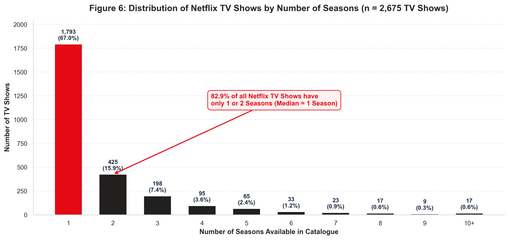
| Season Count | 1 Season | 2 Seasons | 3 Seasons | 4 Seasons | 5 Seasons | 6 Seasons | 7 Seasons | 8 Seasons | 9 Seasons | 10–17 Seasons |
|---|---|---|---|---|---|---|---|---|---|---|
| Series Count (n) | 1,793 | 425 | 198 | 95 | 65 | 33 | 23 | 17 | 9 | 17 |
| Share (%) | 67.03% | 15.89% | 7.40% | 3.55% | 2.43% | 1.23% | 0.86% | 0.64% | 0.34% | 0.64% |
| Cumulative (%) | 67.03% | 82.92% | 90.32% | 93.87% | 96.30% | 97.53% | 98.39% | 99.03% | 99.36% | 100.00% |
As shown in Figure 6 and Table 8, television season counts exhibit extreme right-skewness (mean = 1.76 seasons, SD = 1.58, median = 1.0 season, IQR = 1–2 seasons). More than two-thirds (67.03%, 1,793 series) have exactly 1 season, and 90.32% (2,416 series) have 3 or fewer seasons. Only 17 series (0.64%) span 10 or more seasons, dominated by licensed network syndication properties (Grey's Anatomy at 17 seasons; Supernatural and NCIS at 15 seasons; COMEDIANS of the world and Heartland at 13 seasons; Criminal Minds, Trailer Park Boys, and Red vs. Blue at 12 seasons).
Figure 7 presents the univariate distribution of the 14 standardized rating categories across the catalogue, while Figure 9 and Table 9 contrast granular rating codes against our harmonized 4-level Audience Maturity Tier taxonomy across content formats.
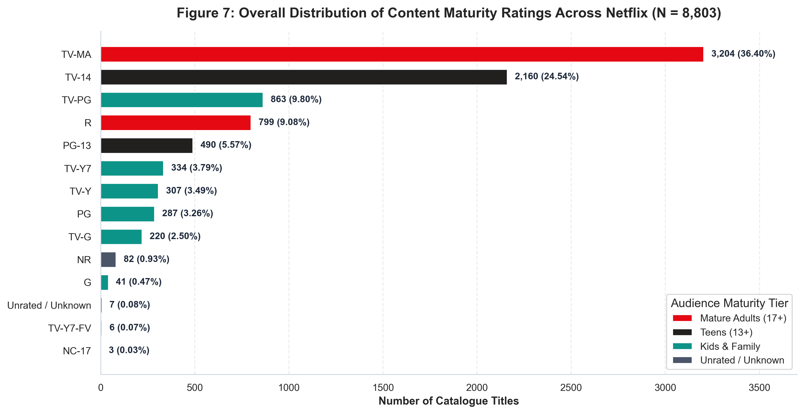
TV-MA (36.40%) and TV-14 (24.54%) together represent 60.93% of all catalogue titles.
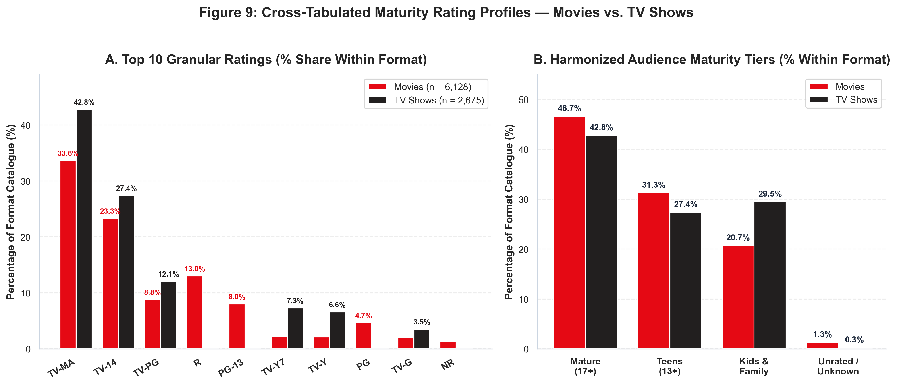
R, PG-13, PG) appear almost exclusively on Movies. Panel B harmonizes MPAA and TV Parental Guidelines into unified Audience Maturity Tiers, demonstrating that TV Shows allocate a significantly larger share to Kids & Family programming (29.5% vs. 20.7%).
| Content Format | Mature Adults (17+) (TV-MA, R, NC-17) |
Teens (13+) (TV-14, PG-13) |
Kids & Family (TV-Y*, G, TV-G, PG, TV-PG) |
Unrated / Unknown (NR, UR, Null) |
Format Total (Row 100%) |
|---|---|---|---|---|---|
| Movie (Count & Row %) | 2,860 (46.67%) | 1,917 (31.28%) | 1,269 (20.71%) | 82 (1.34%) | 6,128 (100.00%) |
| TV Show (Count & Row %) | 1,146 (42.84%) | 733 (27.40%) | 789 (29.50%) | 7 (0.26%) | 2,675 (100.00%) |
| Total Catalogue | 4,006 (45.51%) | 2,650 (30.10%) | 2,058 (23.38%) | 89 (1.01%) | 8,803 (100.00%) |
Table 9 and Figure 9 resolve a widespread analytical error in descriptive studies of the Netflix dataset. When analysts compare raw rating strings without regulatory harmonization (Figure 9A), they observe that TV-MA is 9.2 percentage points higher in TV Shows (42.80%) than in Movies (33.60%), and TV-14 is 4.1 percentage points higher in TV Shows (27.40%) than in Movies (23.29%). However, this discrepancy is purely a regulatory artifact: theatrical feature films licensed by Netflix retain their Motion Picture Association (MPAA) ratings—including 797 Movies rated R (13.01% of Movies) and 490 Movies rated PG-13 (8.00% of Movies)—whereas television series are rated exclusively under the US Television Parental Guidelines.
Once MPAA and TV Parental codes are mapped to unified age-group tiers (Table 9, Figure 9B), the direction of association reverses: feature films exhibit higher shares of both Mature Adults 17+ (46.67% vs. 42.84%) and Teens 13+ (31.28% vs. 27.40%), whereas episodic television allocates nearly three-tenths of its entire portfolio to Kids & Family programming (29.50% of TV Shows vs. 20.71% of Movies). Evaluating a 2 × 4 Pearson Chi-square test on Table 9 confirms that this divergence is highly statistically significant:
Rating Harmonization Assumptions & Sensitivity Analysis: Because the MPAA theatrical system and US Television Parental Guidelines are not exact equivalents—particularly regarding whether PG and TV-PG belong with younger children's content or general/teen audiences—and because Cramér's V = 0.1056 represents a modest effect size despite its small p-value, we evaluate two alternative classifications across all n = 8,714 rated titles: (1) Mapping B (Disaggregated 4-Tier) separates Strict Young Kids (TV-Y, TV-Y7, TV-Y7-FV, G, TV-G; n = 908) from Parental Guidance (PG, TV-PG; n = 1,150), yielding 17.47% Young Kids in TV Shows vs. 7.31% in Movies (2.39 : 1 ratio; χ2 = 205.22, df = 3, p = 3.14 × 10−44, Cramér's V = 0.1535); and (2) Mapping C (3-Tier with PG/TV-PG merged into Teens) yields the same 17.47% vs. 7.31% Young Kids split (χ2 = 205.15, df = 2, p = 2.83 × 10−45, Cramér's V = 0.1534). Thus, the finding that episodic television allocates a higher share of catalogue listings to children's programming than feature films is robust across classification boundaries (and stronger when PG/TV-PG are separated). Note that this distribution describes catalogue supply representation; viewer engagement and subscriber retention data would be required to test whether this supply translates into household viewing or retention.
Figure 13 (Diagram 5.1) illustrates the end-to-end empirical synthesis architecture connecting our raw SVOD metadata auditing pipeline, dual-grain First Normal Form (1NF) tokenization, and cross-regulatory rating harmonization to the three primary structural dynamics uncovered in this study, while Table 10 summarizes all ten empirical findings and their supporting test statistics.
| # | Empirical Dimension | Quantitative Finding & Test Statistic | Methodological / Industrial Implication |
|---|---|---|---|
| F1 | Catalogue Format Balance (RQ01) | 6,128 Movies (69.61%) vs. 2,675 TV Shows (30.39%); ratio = 2.29 : 1 | Movies provide unit title breadth; TV Shows gained share of additions (24.9% in 2018 → 33.7% in 2021) |
| F2 | Format-Conditioned MAR Missingness | director null in 91.40% of TV Shows vs. 3.07% of Movies (χ2 = 6,926.74, p < 10−300, V = 0.8871) |
Listwise deletion (dropna) induces catastrophic selection bias by purging 91.4% of TV series |
| F3 | Schema Contamination & Deduplication | 3 missing duration rows recovered from rating (100% completeness); 4 /case duplicate pairs removed |
Demonstrates necessity of cross-column regex validation and Unicode whitespace normalization in ETL |
| F4 | Geographic Pareto Concentration (RQ02) | US (3,689; 46.27%), India (1,046; 13.12%), and UK (806; 10.11%) lead across 122 countries; 16.55% co-productions | Requires 1NF tokenization and dual denominators (geo-tagged vs. total catalogue) to avoid bias |
| F5 | Regional Format Specialization (RQ02) | India is 91.97% Movies; South Korea (73.59% TV) and Japan (62.58% TV) are series-driven (χ2 = 687.68, V = 0.3017) | Holds under 1-row-per-title primary-country (V=0.3339) and single-country (V=0.3730) independence tests |
| F6 | Global Genre Architecture (RQ03) | International tags appear on 44.86% of Movies and 50.47% of TV Shows across 19,315 genre credits (mean 2.19/title) |
Non-domestic content forms nearly half of catalogue supply; format stratification prevents volume distortion |
| F7 | Ingestion Wave & TV Resilience (RQ04) | Additions grew 25-fold from 82 (2015) to 2,013 (2019); TV additions peaked in 2020 (595 series) | Reflects 2016 global rollout followed by post-2019 pivot toward original serialized television |
| F8 | Production Vintage Recency | 84.85% released ≥ 2010; 62.08% released 2015–2021 (Median Movie = 2017; Median TV Show = 2018) | SVOD catalogues prioritize contemporary releases over pre-2000 archival cinema |
| F9 | Catalogue Addition Lag Asymmetry (RQ04) | 51.98% of TV Shows added in release year (median lag = 0 yrs) vs. 30.40% of Movies (median = 2 yrs; p = 2.62×10−98) | TV Shows exhibit shorter observed addition lag than Movies (29.12% of Movies added ≥ 6 yrs post-release) |
| F10 | Runtimes, Seasons & Maturity (RQ05/06) | Movie median = 98 min (IQR 87–114); 67.03% of TV Shows = 1 season; TV Kids share = 29.50% vs. 20.71% Movies | Harmonizing MPAA and TV ratings overturns the raw TV-MA artifact and highlights episodic Kids programming |
A central tenet of trustworthy data science is establishing explicit epistemological boundaries around what observational data can and cannot establish. Five structural limitations govern the interpretation of this corpus:
International Movies at 31.23% or TV-MA at 36.40%) must be interpreted strictly as catalogue supply allocation, never as direct evidence of audience preference or financial return.
netflix_titles.csv captures a static cross-section of the catalogue active as of September 25, 2021, it omits historical additions whose licensing agreements expired prior to the snapshot date (date_removed is unobserved). Apparent low addition counts in 2008–2015 reflect both smaller historical library size and the expiration of early multi-year studio output deals (such as the Starz and Epix licensing packages).
1 Movie vs. 1 Multi-Season TV Show): Title-level frequency counts weight a 62-minute stand-up special and a 17-season, 380-episode dramatic series (Grey's Anatomy, ~260 hours of video) equally as single rows. Because the schema reports TV Show duration in seasons rather than total episode minutes, unit title counts substantially understate the share of total catalogue runtime hours represented by episodic television.
Building upon the empirical baseline established in this study, we identify three high-value extensions for applied media analytics and data engineering:
netflix_titles.csv with external relational databases (IMDb Non-Commercial Datasets or the TMDB API) via title and release year matching enables calculation of exact episode counts and total series runtime hours, as well as explicit disambiguation between in-house Netflix Originals and third-party licensed acquisitions.sentence-transformers/all-mpnet-base-v2) and hierarchical density clustering (HDBSCAN / BERTopic) to the free-text description field can uncover fine-grained narrative and thematic clusters beyond Netflix's 42 surface listed_in tags.This paper demonstrated that elevating exploratory data analysis from superficial chart generation to rigorous empirical science requires systematic interrogation of missingness mechanisms, cross-column schema integrity, relational atomicity, and multi-timestamp lag structures. Through a comprehensive audit and statistical investigation of 8,803 unique titles in Netflix's global streaming catalogue, we established four principal conclusions: (1) metadata missingness in SVOD catalogues is highly non-random, with director omission governed by a powerful format-conditioned MAR mechanism (χ2 = 6,926.74, Cramér's V = 0.8871) that invalidates naive listwise deletion; (2) Netflix's international content sourcing exhibits sharp regional format specialization (χ2 = 687.68, Cramér's V = 0.3017), contrasting India's theatrical film model (92.0% Movies) against South Korea's (73.6% TV Shows) and Japan's (62.6% TV Shows) serialized television ecosystems; (3) catalogue addition lag dynamics diverge significantly by format (Mann-Whitney U = 1.035 × 107, p = 2.62 × 10−98), proving that episodic television enters the platform primarily as contemporary first-run programming (52.0% same-year ingestion; median lag = 0.0 years) while feature films combine contemporary premieres with deep back-catalogue licensing (29.1% licensed ≥ 6 years post-release); and (4) reconciling MPAA theatrical ratings with Television Parental Guidelines reverses a common taxonomic artifact, proving that while 75.6% of the catalogue targets Mature Adult and Teen demographics, episodic television allocates a significantly larger share of its portfolio to Kids and Family programming (29.5% vs. 20.7%; χ2 = 98.16, p = 3.86 × 10−21).
The complete reproducible Python source code, executed Jupyter Notebook (netflix_content_analytics.ipynb), automated test suite, and high-resolution (300 DPI) statistical figures are publicly archived on GitHub at https://github.com/DavidDeez/netflix-content-analytics. An interactive web data appendix allowing real-time filtering and contingency table regeneration across all 8,803 deduplicated records is hosted permanently on Hugging Face Spaces at https://huggingface.co/spaces/DavidDeezzy/netflix-content-analytics. The underlying raw dataset (shivamb/netflix-shows) is available in the public domain (CC0-1.0) via Kaggle at https://www.kaggle.com/datasets/shivamb/netflix-shows.
shivamb/netflix-shows, Version 5). Kaggle. Creative Commons Public Domain Dedication (CC0-1.0). https://www.kaggle.com/datasets/shivamb/netflix-shows